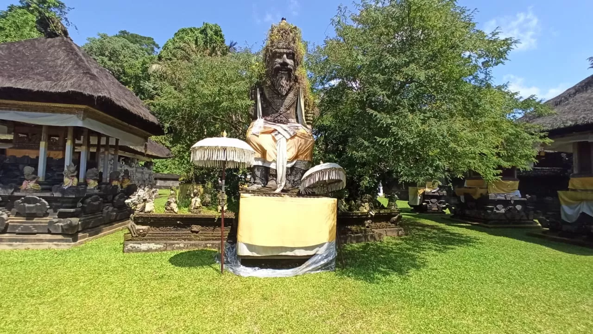
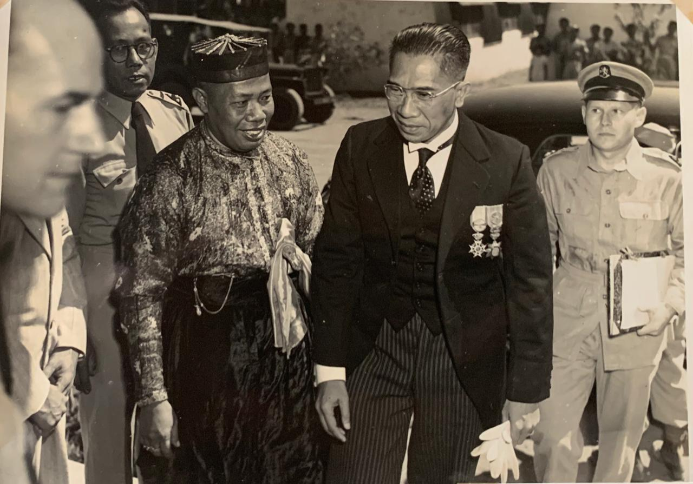

Akar Spiritual dari Abad ke-8
Sejarah Ubud yang panjang dan kaya berakar pada legenda Rsi Markandeya, seorang pertapa bijaksana dan penuh dedikasi dari tanah Jawa. Pada abad ke-8 Masehi, beliau melakukan perjalanan spiritual yang panjang ke Pulau Bali dan akhirnya bermeditasi di Campuhan, sebuah titik sakral di mana dua sungai suci bertemu dan menciptakan energi spiritual yang luar biasa kuat.

Di lokasi penuh berkah inilah beliau mendirikan Pura Gunung Lebah, sebuah pura yang hingga kini masih berdiri tegak dan menjadi tempat pemujaan penting bagi masyarakat setempat. Rsi Markandeya merasakan energi spiritual yang sangat kuat dari tempat ini, dan sejak saat itu Campuhan dianggap sebagai tanah suci yang memiliki kekuatan penyembuhan dan transformasi spiritual.
Nama "Ubud" sendiri memiliki akar etimologis yang menarik. Kata ini berasal dari ubad, yang berarti "obat" atau "medicine" dalam bahasa Bali kuno. Hal ini merujuk pada tanaman-tanaman obat yang tumbuh melimpah di sekitar area pertapaan Rsi Markandeya. Sejak awal sejarahnya, Ubud telah diakui sebagai pusat kekuatan penyembuhan—baik fisik maupun spiritual—yang menarik para pertapa dan peziarah dari berbagai penjuru.


Era Kerajaan dan Patron Seni
Selama berabad-abad, Ubud berkembang di bawah kekuasaan berbagai kerajaan Bali yang berganti-ganti, masing-masing meninggalkan jejak budaya dan arsitektur yang unik. Namun, titik balik transformatif terjadi pada akhir abad ke-19 dan awal abad ke-20 ketika Tjokorda Gde Agung Sukawati, penguasa Ubud yang visioner, membuka pintunya lebar-lebar bagi seniman-seniman dan intelektual Eropa.

Beliau mengundang pelukis berbakat seperti Walter Spies dari Jerman dan Rudolf Bonnet dari Belanda untuk tinggal, berkarya, dan mengajar di Ubud. Keputusan berani ini memicu ledakan kreativitas yang belum pernah terjadi sebelumnya dalam sejarah seni Bali.
Walter Spies tidak hanya melukis, tetapi juga menjadi jembatan budaya yang menghubungkan seniman lokal dengan teknik dan perspektif Barat. Rumahnya di Campuhan menjadi tempat berkumpul para seniman, penulis, dan intelektual dari seluruh dunia, menciptakan atmosfer kosmopolitan yang unik di tengah pedesaan Bali yang masih tradisional.